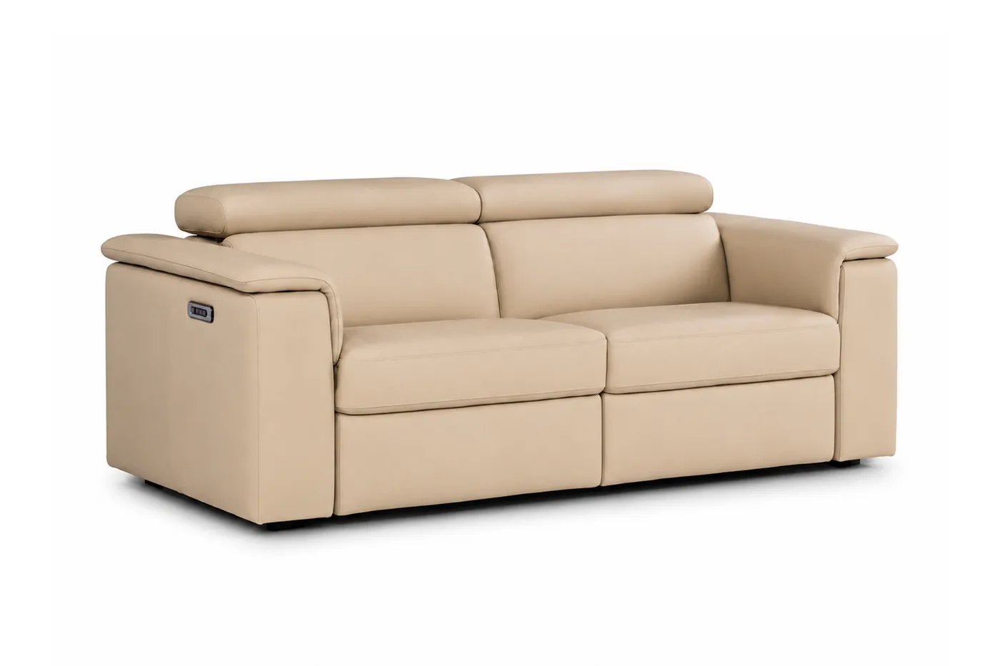
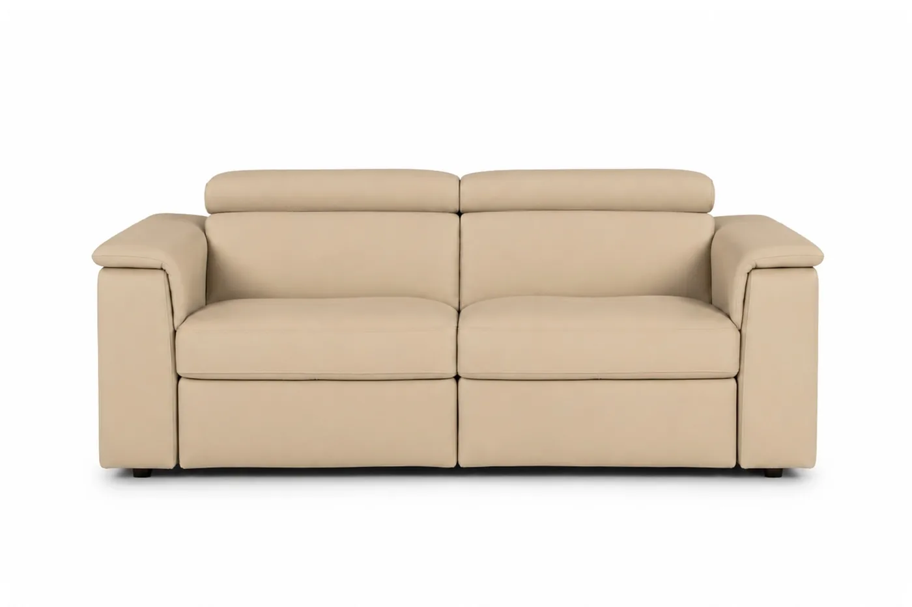
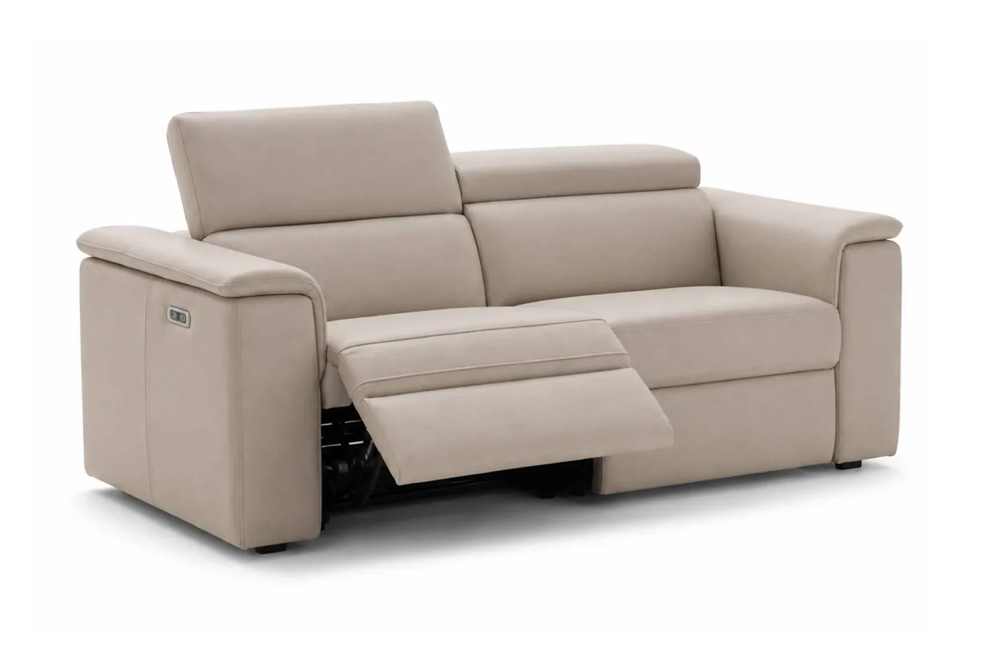

Nicoletti Home · Canapé relax électrique
Nicoletti Memphis
-

Une place ouverte, têtière relevée.

Photos : Nicoletti Home. Visuels du fabricant, coloris non contractuels.
Un canapé relax aux lignes droites, avec têtières réglables et commande intégrée à l’accoudoir. Il se compose à la carte, du fauteuil à l’angle, en cuir fin, en tissu ou en microfibre.
- Assise et dossier s’inclinent ensemble, la têtière se relève séparément
- Soutien lombaire réglable sur la version Comfort
- Commande sur l’accoudoir avec prise USB-C et retour à la position initiale
- Coussins d’assise à ressorts ensachés
- Fabriqué en Italie
- Exposé au magasin de Leval-Trahegnies
- Sur commande : composition et revêtement au choix
- Garantie du fabricant Nicoletti, conditions détaillées au magasin.
La composition exposée change au fil des arrivages : les moteurs s’essaient toujours. Cuir et tissu à voir au magasin.
Ou appelez le magasin : 064 46 07 72
Sous tous les angles
Memphis, vue par vue.




-
Refermé, vu de trois quarts.
-

La commande se trouve sur l’accoudoir.
-
En position assise.
-
En tissu.
Caractéristiques
Fiche technique.
D’après la fiche du fabricant. Dimensions en centimètres, relax fermé, sauf mention.
| Hauteur | 79 cm |
|---|---|
| Profondeur | 107 cm |
| Hauteur d’assise | 47 cm |
| Profondeur d’assise | 56 cm |
| Hauteur têtière relevée | 100 cm au maximum |
| Profondeur relax ouvert | 160 cm au maximum |
| Dessin | Abruzzese |
|---|---|
| Structure | Sapin, multiplis, aggloméré et masonite, recouverts de mousse polyuréthane |
| Suspension | Sangles élastiques |
| Assise | Coussins à ressorts ensachés enrobés de mousse polyuréthane, ouate 100 % polyester |
| Dossier et têtières | Mousse polyuréthane, ouate 100 % polyester |
| Accoudoirs | Mousse polyuréthane, ouate 100 % polyester |
| Densité des mousses | Assise 30 kg/m³ avec ressorts, dossier 28 kg/m³ |
| Pieds | Hauteur 4 cm |
| Déhoussable | Non |
| Version fixe | Têtières relevables à la main |
|---|---|
| Version relax électrique | Assise et dossier inclinables, têtière électrique indépendante |
| Version Comfort | En plus : soutien lombaire réglable indépendamment |
| Commande | Intégrée à l’accoudoir (sur le côté de l’assise pour les éléments sans accoudoir), prise USB-C, bouton de retour |
| Charge recommandée | Fauteuil 120 kg, deux places 200 kg, trois places 240 kg |
|---|
Composition et revêtements
Composez votre Memphis.
Toutes les compositions se découvrent au magasin.
Revêtements possibles
- Cuirs fins et souples
- Tissu
- Microfibre
Non disponibles sur ce modèle
- Cuirs épais
- Cuirs naturels
- Cuir et croûte de cuir
- Plusieurs couleurs sur un même canapé
Le modèle n’étant pas déhoussable, le tissu est d’une seule couleur.
Vos questions
Avant de choisir Memphis.
Faut-il beaucoup d’espace derrière et devant le canapé ?
Relax ouvert, Memphis mesure au plus 160 cm de profondeur, contre 107 cm refermé. Prévoyez ce dégagement devant le canapé ; pour l’espace derrière, nous vérifions avec vous selon l’élément choisi.
Peut-on le choisir en tissu ?
Oui : Memphis existe en cuir fin et souple, en tissu ou en microfibre. Les housses ne s’enlèvent pas, et le tissu est d’une seule couleur.
Quelle différence entre la version électrique et la version Comfort ?
Les deux inclinent ensemble l’assise et le dossier, et relèvent la têtière séparément. La version Comfort ajoute un soutien lombaire réglable.
Voir aussi
Continuer la visite.
Venez essayer Memphis.
Notre équipe vous aide à choisir la composition, le revêtement et la version qui vous conviennent. Parking facile d’accès, avec ou sans rendez-vous.
Partager cette page
- Lundi
- 13h30 – 18h30
- Mardi au samedi
- 10h30 – 18h30
- Dimanche
- Fermé
- Téléphone
- 064 46 07 72
- Livraison
- Par nos soins, dans le Hainaut (Binche, La Louvière, Mons, Charleroi…) et la province de Namur
Nous livrons aussi dans le nord de la France. Ailleurs, dont Bruxelles : sur demande.